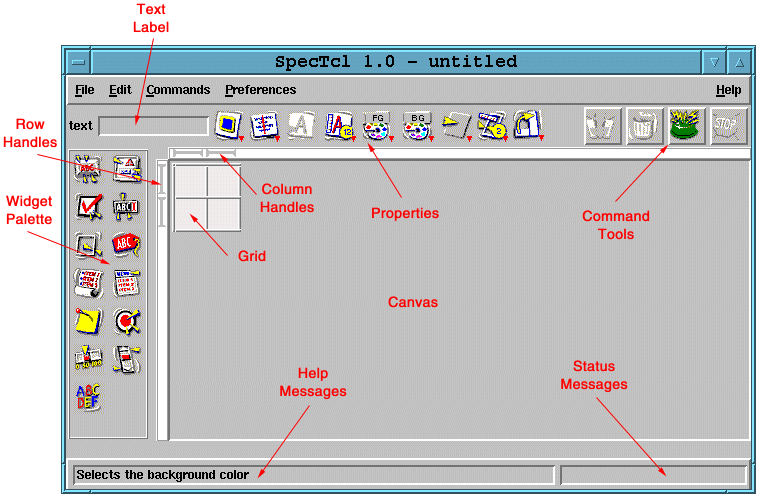
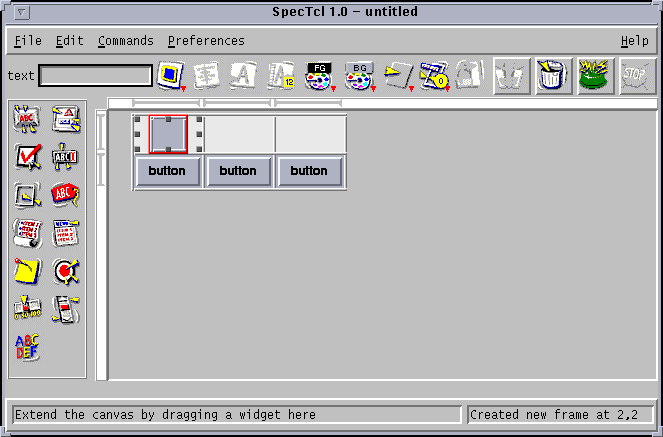
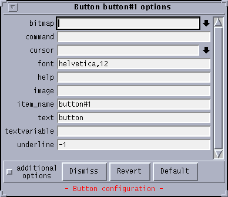

SpecTcl User Interface
Main window

This view of the SpecTcl user interface shows the location of the major
functional regions.
- MenuBar
- Most of the capabilities of SpecTcl may be invoked from one of the
menus on the MenuBar. Many of those options have single-key short cuts
, the key, or key combination that is listed to the right of the menu
option.
- Tool-Bar
- Many of the common widget configuration options may be accessed via
the tool-bar as well as from the widget's
option sheet. When ever a widget is selected, the icon for each tool-bar
item will change to reflect the current state of its option for that widget.
The tool-bar items permit rapid configuration
of (from left to right>:
- The sides of the widget that stick to the enclosing cell
- How the text within a widget is justified (left, right, or center)
- The text style (plain, bold, italic, or both). The text style, unlike
the other tool-bar items, is not a
menu. repeatedly clicking on the A cycles through the various styles.
- The point size for the text in the widget
- The foreground color of the widget. This also sets the activeforeground
If the default color choices are not adequate, selecting more...
will pop up a dialog box to add an arbitrary color to the palette.
- The background color of the widget.
- The shape of the border relief (flat, raised, sunken, ridge, or groove)
- The border thickness
- The orientation, either horizontal or vertical.
- Widget Palette
- The widget palette contains an entry for each widget that SpecTcl discovered
during startup. Widgets are created by dragging them with the mouse from
the palette onto the canvas, or by clicking
on a palette item to select it, and then clicking on empty grid cells to
create one of these widgets. Normally widgets are created with their Tk
defaults. Double-clicking on a palette item brings up a generic widget
option sheet, which can be used to alter the default properties that widgets
are created with.
- Row Handles
- The row handles are used to configure the minimum size and resize behavior
of a table row, as well as provide visual feedback while dragging a widget.
Each grid (or sub-grid) within the canvas
has its own row handles. Only the handles for the current grid are displayed.
The following operations are valid on row handles:
- Clicking on a row handle selects it, causing it to turn red.
Once a row handle is selected, its row may be deleted with the delete
key. A row is never deleted if it is occupied by a widget that would have
to be deleted in order to make the row go away.
- Once a row handle is selected, clicking on it toggles the resize behavior
of its row. The shape of the ends indicates its current resize behavior.
- Grabbing a handle with the mouse and dragging it causes its minimum
size to be changed. This will cause any widget in that row whose sticky
property is either n or s to grow or shrink accordingly.
Currently, the smallest size a row may shrink to is two pixels, or the
height of the largest widget in that row.
Resizing rows that contain widgets that span multiple rows may appear
to have strange behavior, due to the way the resize constraints are maintained.
The Current height of the row (in pixels) is displayed in the message
area during the drag.
- Column Handles
- The column handles are used to configure the minimum size and resize
behavior of a table column, as well as provide visual feedback while dragging
a widget. Each grid (or sub-grid) within the canvas
has its own column handles. Only the handles for the current grid are displayed.
The following operations are valid on column handles:
- Clicking on a column handle selects it, causing it to turn red.
Once a column handle is selected, its column may be deleted with the delete
key. A column is never deleted if it is occupied by a widget that would
have to be deleted in order to make the column go away.
- Once a column handle is selected, clicking on it toggles the resize
behavior of its column. The shape of the ends indicates its current resize
behavior.
- Grabbing a handle with the mouse and dragging it causes its minimum
size to be changed. This will cause any widget in that column whose sticky
property is either e or w to grow or shrink accordingly.
Currently, the smallest size a column may shrink to is two pixels, or the
width of the largest widget in that column.
Resizing columns that contain widgets that span multiple column may
appear to have strange behavior, due to the way the resize constraints
are maintained. The Current height of the column (in pixels) is displayed
in the message area during the drag.
- Message area
- The message area is used for a variety of things
in SpecTcl.
- If help is turned on (the default), anytime the mouse cursor
stays on a user interface element for more than a couple of seconds, a
one line description of that element is displayed in the message area.
- Warnings, progress messages and diagnostics are displayed in the message
area where appropriate.
- When dragging either a widget or a resize handle, the message area
is used to indicate the progress of the dragging operation
- When SpecTcl is busy, the message area turns red.
Wait until the message changes to black before initiating any user interface
actions
- grid
- The grid demarcates the rows and column in which widgets are placed
to create the user interface. The grid lines divide the user interface
into rows and columns. The rectangular region created by
the intersection of a row and a column is called a cell. Each widget
may occupy (exclusively) a rectangular group of cells, which is called
a cavity. Grid lines never cross a cavity, and are erased
where a cavity spans a row or column boundary.
The size of the grid may be increased or decreased as desired. New rows
or columns may be added by clicking on an existing grid line. Empty rows
or column may be deleted either by selecting the appropriate row or column
handle and keying delete, or by clicking on an empty cell (which
automatically selects the cell's row and column handles), then keying delete.
- Canvas
- The canvas is the semi-infinite
area in which the user interface or panel is built, and contains
the grid and the widgets of the user interface.
- scroll bars
- A user interface may be constructed which is larger than the currently
viewable area of the canvas. The scrollbars
may be used to scroll the desired region of the canvas
into view.
When dragging a widget, the canvas
view (and scrollbars) are automatically repositioned when the widget is
dragged to the edge of the canvas's
viewable region.
- project name
- The name of the current project or user interface panel is displayed
in the SpecTcl title bar, along with the version of SpecTcl being used.
The representation of the title bar is controlled by the window manager,
so the position and style of the title may differ from what is shown in
the picture.
Selected widget

A widget's properties can only be changed while the widget is selected
Only one widget may be selected at a time, either by clicking on
it with the mouse, or by using the arrow keys.
The selected widget is always highlighted by a red
border , called the selection highlight. (Note that when a row
or column handle is selected, it is also displayed in red).
In addition to being highlighted, the sides and corners of the selected
widget's cavity are decorated with resize handles that may be used
to change the number of cells that the cavity occupies. When the mouse
cursor is over a resize handle, the cursor shape changes to indicate the
direction (or directions) that the cavity may grow. The cavity may only
be expanded until it reaches the end of the grid, or abuts another cavity.
When a widget is moved or copied (or pasted from the clipboard), its
cavity is changed to occupy a single cell, to make it more apparent where
it will go when it is dropped. There are three ways to change the selected
widgets properties:
- The option sheet
- The option sheet is a scrollable list of key/value pairs that contains
every configuration property for a widget. It is accessed by keying control-w,
selection widget options from the menu, or by double-clicking on
the widget.
- The tool-bar
- The tool-bar allows configuring common widget properties quickly, without
resorting to the option sheet.
- By direct manipulation
- The row, column, row-span, and column-span may be adjusted directly,
by dragging the widget or its cavities resize handles.
Option Sheet

The widget's option sheet may be used to configure all of its properties.
Each property must be validated before the change is affected. Before validation,
the text for the option is shown in red. When
the dismiss button is pressed, all non-validated values resort to
their last good value.
some of the widget's options are rarely used by applications, and are
deemed to be additional. By deselecting the additional
check-box at the bottom of the window, the additional options are
removed from the option sheet.